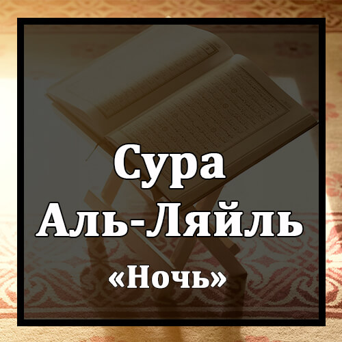

Бисмилляхир-Рахманир-Рахиим
Во имя Аллаха Милостивого и Милосердного!
Уаль-Ляйли Иза Йагшаа.
Клянусь ночью, которая покрывает землю!
Уан-Нахари Иза Таджалля.
Клянусь днем, который сияет светом!
Уа Ма Халяказ-Закара Уаль-Унсаа.
Клянусь Тем, Кто создал мужчину и женщину!
Инна Са`йакум Ляшаттаа.
Ваши стремления различны.
Фа`амма Ман А`та Уаттакаа.
Тому, кто делал пожертвования и был богобоязнен,
Уа Саддака Биль-Хуснаа.
кто признавал наилучшее,
Фасануйассируху Лильйусраа.
Мы облегчим путь к легчайшему.
Уа Амма Ман Бахиля Уастагнаа.
А тому, кто был скуп и полагал, что ни в чем не нуждается,
Уа Каззаба Биль-Хуснаа.
кто счел ложью наилучшее,
Фасануйассируху Лиль`усраа.
Мы облегчим путь к тягчайшему.
Уа Ма Йугни `Анху Малюху Иза Тараддаа.
Не спасет его достояние, когда он падет.
Инна `Алейна Лальхудаа.
Нам надлежит вести прямым путем.
Уа Инна Ляна Лиль`ахырата Уаль-Уля.
Нам принадлежат Последняя жизнь и жизнь первая.
Фа`анзартукум Нараан Таляззаа.
Я предостерег вас от пылающего Огня.
Ля Йасляха Илляль-Ашкаа.
Войдет в него только самый несчастный,
Аль-Лязи Каззаба Уа Тауалля.
который считает истину ложью и отворачивается.
Уа Сайуджаннабухаль-Аткаа.
Отдален будет от него богобоязненный,
Аль-Лязи Йу`ти Маляху Йатазаккаа.
который раздает свое богатство, очищаясь,
Уа Ма Ли`хадин `Индаху Мин Ни`матин Туджзаа.
и всякую милость возмещает сполна
Иллябтига`а Уаджхи Раббихиль-А`ля.
только из стремления к Лику своего Всевышнего Господа.
Уа Лясауфа Йардаа.
Он непременно будет удовлетворен.